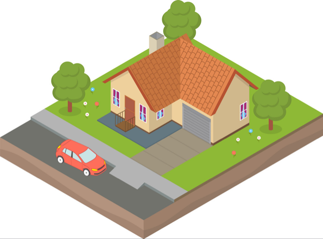
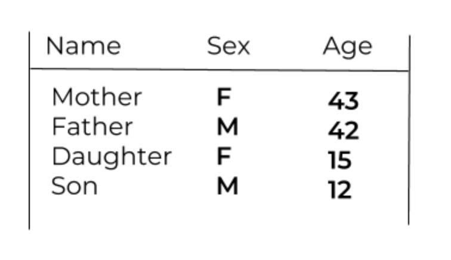
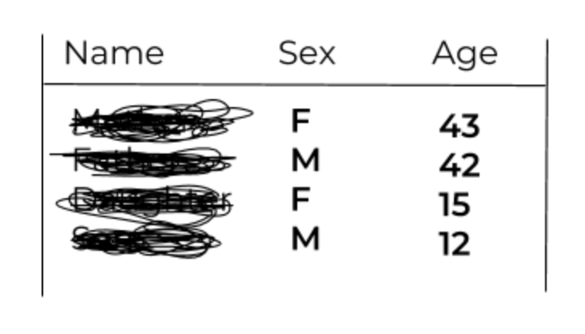
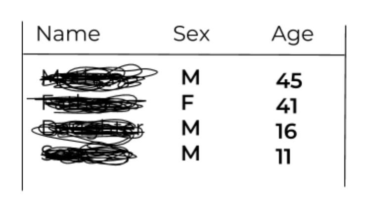
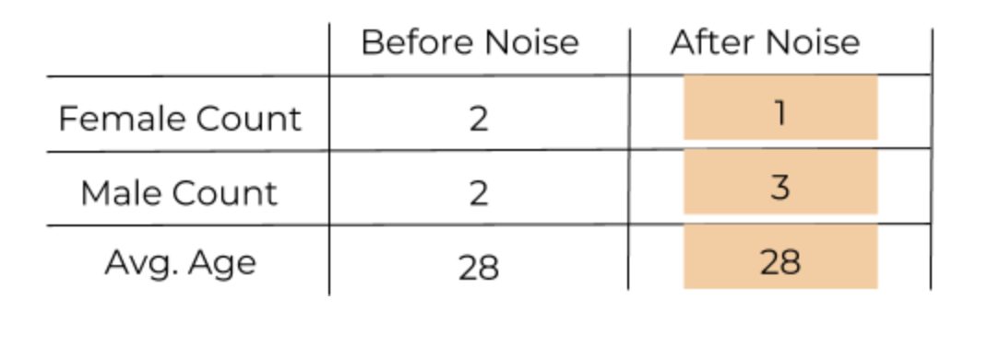
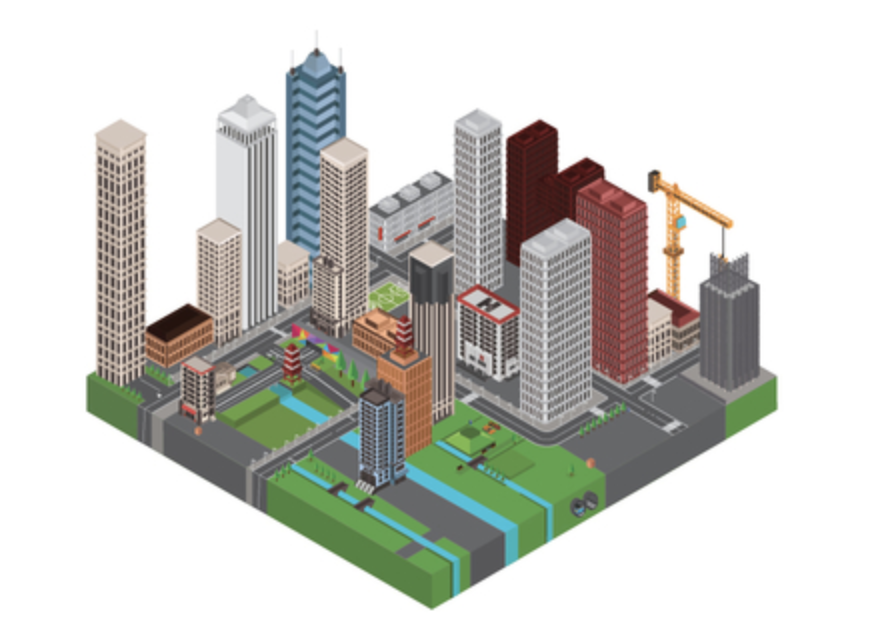

We will be collecting household data from everyone in the country to paint an accurate picture of life in the United States. These data are only collected once every 10 years, and are vital in deciding how many leaders each state can elect
to the House of Representatives.
Here at the Census, it is our top priority to protect the data you entrust to us--here is how we do it.
This is a Census Block.

We report census data grouped by these areas, called blocks. Blocks can be empty, or can have hundreds of residents, and are typically divided by geographic features like roads or creeks.
This block is home to a family of four.
This is what their data look like.

The first thing we do is remove all identifying information from their data, such as their names and contact information.

This may seem like enough to protect this family’s data; but what if someone knows this family’s address? Just from the information above, one can easily identify a mother and father, and their son and daughter, putting the family at risk.
To truly protect the privacy of this family, we must do more. We want to provide accurate data while protecting Americans from having their data identified. We do this by making small, random changes to the data before we publish our reports.
This is called adding noise to the data.
For example, let’s add random noise to this family’s data. Now the data look like this:

Let us compare the aggregate data we might report for the original and noisy data.

Adding noise to the data creates uncertainty.
Say a person was looking at the data for this census block, and knew only one family lived there. Knowing that noise has changed some of the data, they will not know from our data whether the family has 0, 1, 2, 3, or even 4 female members.
This uncertainty about which numbers are exact and which have been adjusted protects families from having their data identified.
With noise, we have obscured the family’s data, but now our results are slightly less accurate. The average age has remained the same, but the Female Count and Male Count have both changed.
But remember, this is only the data for one family on one census block.
The Census collects data on the entire country, counting over 300 million people in over 11 million census blocks.

When we add random noise to this enormous data set, some blocks will overcount variables like sex, and others will undercount them. This way, the noise cancels out in the data, leaving us with accurate counts for the whole country. The more data we have, the more accurate our overall results will be.